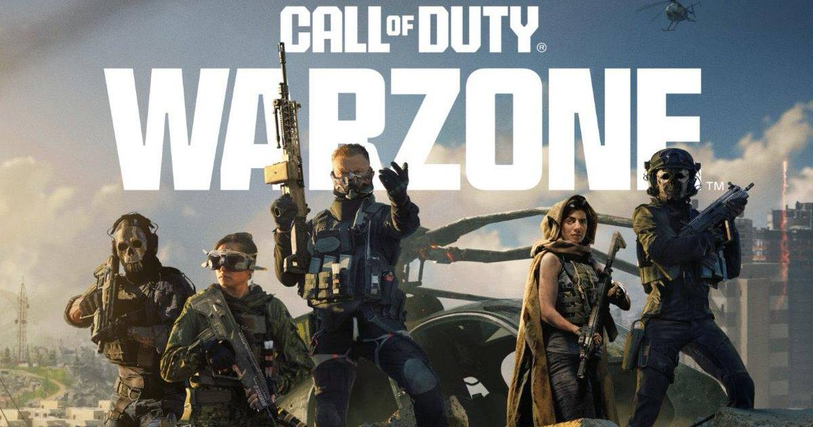

Call of Duty: Warzone ends on PS4 and Xbox One on November 6
When Modern Warfare 4 Season 1 starts on Friday, Warzone stops working on PlayStation 4 and Xbox One — ending the battle royale's run on the consoles it launched on.

Disclosure: this post contains affiliate links. I earn a commission on qualifying purchases.
What happened
Call of Duty: Warzone is ending support on PlayStation 4 and Xbox One on Friday, November 6, when Modern Warfare 4 Season 1 begins. From that point on, the battle royale will no longer be playable on either last-gen console.
It is the end of an era in the most literal sense. Warzone launched on PS4 and Xbox One in March 2020, and for more than six years those consoles have been its home base. Season 1 moves the game exclusively to current-generation hardware — PlayStation 5, Xbox Series X|S, and PC — and November 6 also marks the first time Warzone is available on a Nintendo console.
What Season 1 brings
The new season is not just a platform cull. It adds 33 new weapons from Modern Warfare 4 and introduces a new battle royale map, Hajin, as the game enters its next chapter.
For players still on last-gen hardware, though, the headline is simple: one more day. Warzone remains playable on PS4 and Xbox One through Thursday, November 5. After the Season 1 update lands, that is it.
The last-gen farewell tour
Sony gave the PlayStation 4 one last nod this week, releasing system firmware 14.02 on November 4 — a security-only patch, with no new features. It is the kind of quiet maintenance update a console gets when the industry has already moved on.
The timing is hard to ignore. GTA VI arrives on PS5 on November 19, and PlayStation has already pushed the PS5 firmware update required to play it. The last generation is not being switched off overnight, but the biggest games are done building for it.
Warzone's departure is the clearest marker yet. When the most-played free-to-play shooter on the planet stops supporting your console, the generation is over in every way that matters.
What to do if you still play on PS4 or Xbox One
If Warzone is your game and you are still on last-gen, Friday is the deadline to make a plan — upgrade to a current-gen console or PC, or find your next game. Your account, progress, and unlocks carry over to current-gen platforms, so nothing you have earned is lost. Only the old hardware is being left behind.
Shop Call of Duty
Sources
• Call of Duty Ends an Era on November 6 (CBR)
• Sony Releases Surprise New PlayStation 4 Console Update for November 2026 (Game Rant)
Gear up: Razer — mice, keyboards, headsets and laptops.